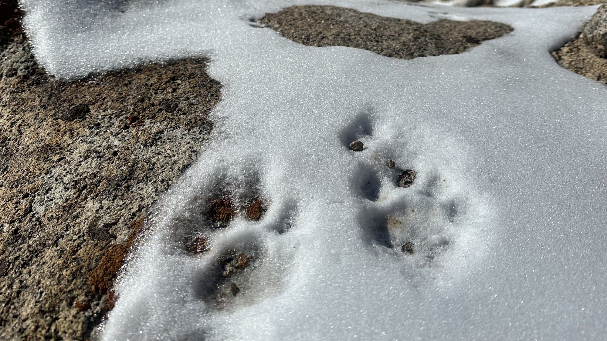

Ghost of the Himalayas
In search of the snow leopard, in winter Spiti
The ghost, seen
Some winters, the mountains keep their secret. Other times, a snow leopard settles on a far ridge and watches you back.
There is no guarantee of a sighting. What we offer is time in the right place, in the cold and the quiet of Spiti, with people who know it well.
Filmed on a Kiang expedition in Spiti, 2025.
Itinerary
Chandigarh to Rampur
We pick you up from Chandigarh airport and begin the journey into the Himalaya. A 7–8 hour drive through the Sutlej valley brings you to Rampur for the night.
Rampur to Kaza (or Tabo)
An 8–9 hour drive takes you deeper into Spiti as the altitude climbs to 3,800 m. Kaza is your acclimatisation base: take it easy and drink plenty of water. In bad weather, we halt at Tabo.
Kaza to Chicham
A 1.5-hour drive over the Chicham Bridge, one of Asia's highest motorable suspension bridges, to Chicham village at 4,150 m, your base for the expedition. An easy afternoon walk to get to know the landscape.
Chicham — acclimatisation
A slow day. Gentle walks around Chicham, tuning your eyes and body to the terrain while the altitude settles.
Snow leopard tracking
An early start with our naturalist, scanning cliffs and slopes for fresh pugmarks, scrapes and the cat itself.
Snow leopard tracking
A full day in the field, covering the valley's best wildlife corridors on foot and by vehicle.
Snow leopard tracking
Tracking continues across high ridges and frozen valleys.
Snow leopard tracking
The final tracking day.
Chicham to Rampur
We leave Chicham and make the long drive back to Rampur.
Rampur to Chandigarh
The drive back to Chandigarh, where the expedition ends.
Wildlife
The valleys and ridges around Chicham are among the richest snow leopard habitats in the world. On drives and walks, we look for:
- Snow leopard
- Asiatic ibex
- Blue sheep (bharal)
- Red fox
- Himalayan wolf
- Golden eagle
- Lammergeier (bearded vulture)
- Red-billed chough
- Alpine chough
- Himalayan snowcock
Spiti and Chicham
Spiti Valley, in the cold desert of Himachal Pradesh, is one of the last true wildernesses in India. Chicham sits at 4,150 m across one of Asia's highest motorable bridges, in the heart of snow leopard country.
Frozen streams, old gorges and snow-dusted peaks. In January the valley is silent, cold and extraordinary.
Before you go
Extreme cold
Temperatures routinely drop to −25 °C and can fall to −30 °C at night. Layered clothing is essential. A detailed packing list follows with your booking confirmation.
Limited bathing
Daily showers are not recommended in this cold. Water pipes can freeze, affecting water supply. We will always do our best to keep you comfortable.
Altitude
Chicham is at 4,150 m. Mountain sickness is a real risk, which is why we build in two acclimatisation days. Hypothermia is possible if precautions are ignored. Listen to your guides, drink water and move slowly.
Mountain weather
Roads can close without warning. Snowfall, landslides and black ice are all possible, and the itinerary may shift. Patience is part of the trip.
Book flexible return tickets
Please avoid a non-refundable return ticket from Chandigarh. Book a flexible or refundable flight, as road closures are common, and keep a buffer day at the end of your trip.
Dry toilets
In some homestays and remote stops, dry composting toilets are the only option. They are clean and well kept. Bring your own toilet paper and a small headlamp.
Packing list
- Trekking shoes (with ankle support)
- 30 L daypack with rain cover
- 2 pairs of thermals
- 1 woollen sweater
- 2 fleece layers
- 1 padded jacket
- 4 quick-dry T-shirts
- Dry-fit trekking pants
- Sunglasses and sun hat
- Gloves, balaclava and woollen cap
- 2 pairs of woollen socks
- Trekking pole (optional)
- Rain jacket and pants, or poncho
- Sunscreen (SPF 50) and moisturiser
- Light towel and lip balm
- Toilet paper (avoid wet wipes)
- Toiletries
- Reusable bags (for used clothes)
- Two water bottles
- Personal medical kit
- High-resolution camera body
- Telephoto lens, 400 mm or longer
- Teleconverter (recommended)
- At least three charged batteries
- Sturdy tripod
A soft copy of a government photo ID (driving licence, Aadhaar or passport) is needed for local permits. Carry the original throughout the trip.
We send a disclaimer form before the expedition. Print it, read it, sign it and hand it to your expedition leader at the first briefing.
What's included
- Flights
- Travel insurance
- Personal porter (on request)
- Personal expenses
- Anything not listed under inclusions
A non-refundable advance of 25% confirms your booking. The balance is due at least 20 days before departure.
Ask us anything about the trip, or reserve a place. We reply within two working days.